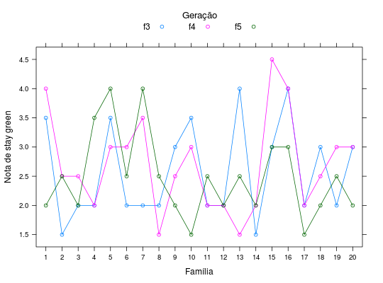

Notas da avaliação do "stay green" obtidos de famílias de feijoeiro, avaliados nas gerações \(F_{2:3}\), \(F_{2:4}\) e \(F_{2:5}\).
Um data.frame com 60 observações e 3 variáveis, em que
famgeracnotaRAMALHO et al. (2005), Exercício 13.3, pág. 257.
data(RamalhoEx13.3)#> Warning: data set ‘RamalhoEx13.3’ not foundstr(RamalhoEx13.3)#> 'data.frame': 60 obs. of 3 variables: #> $ fam : Factor w/ 20 levels "1","2","3","4",..: 1 2 3 4 5 6 7 8 9 10 ... #> $ gerac: Factor w/ 3 levels "f3","f4","f5": 1 1 1 1 1 1 1 1 1 1 ... #> $ nota : num 3.5 1.5 2 2 3.5 2 2 2 3 3.5 ...library(lattice) xyplot(nota ~ fam, groups = gerac, data = RamalhoEx13.3, type = c("p", "a"), ylab = "Nota de stay green", xlab = "Família", auto.key = list(title = "Geração", cex.title = 1.1, columns = 3))ftable(with(RamalhoEx13.3, tapply(nota, list(fam = fam, gerac = gerac), FUN = mean)))#> gerac f3 f4 f5 #> fam #> 1 3.5 4.0 2.0 #> 2 1.5 2.5 2.5 #> 3 2.0 2.5 2.0 #> 4 2.0 2.0 3.5 #> 5 3.5 3.0 4.0 #> 6 2.0 3.0 2.5 #> 7 2.0 3.5 4.0 #> 8 2.0 1.5 2.5 #> 9 3.0 2.5 2.0 #> 10 3.5 3.0 1.5 #> 11 2.0 2.0 2.5 #> 12 2.0 2.0 2.0 #> 13 4.0 1.5 2.5 #> 14 1.5 2.0 2.0 #> 15 3.0 4.5 3.0 #> 16 4.0 4.0 3.0 #> 17 2.0 2.0 1.5 #> 18 3.0 2.5 2.0 #> 19 2.0 3.0 2.5 #> 20 3.0 3.0 2.0